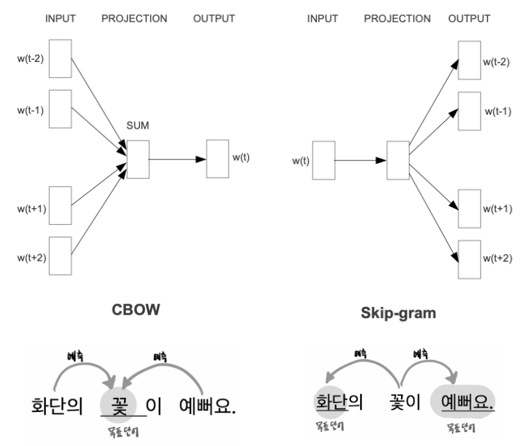
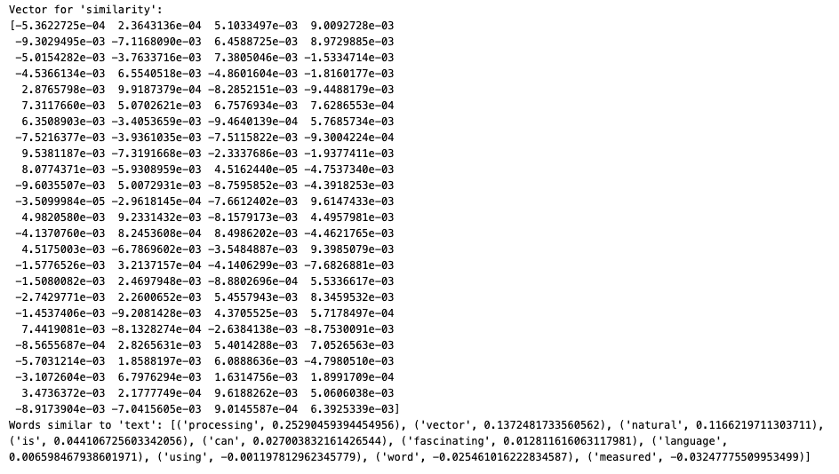
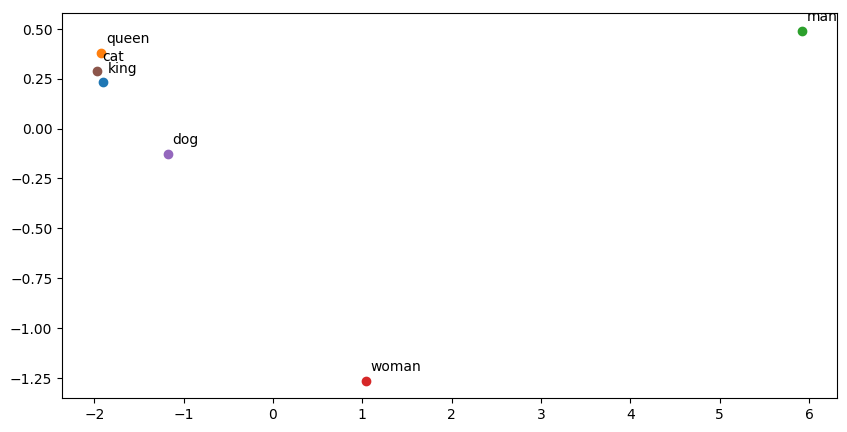
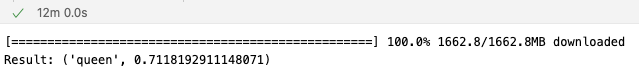

12 Word Embedding and Relational Similarity
12.1 Word Embedding
12.1.1 Overview
Word Embedding refers to a technique where words are mapped to vectors of real numbers, typically in a lower-dimensional space. These vectors capture the semantic meaning of words. Unlike TF-IDF, embeddings capture semantic similarity—words with similar meanings will have closer vectors.
Popular models for word embeddings include:
Word2Vec: Predicts context words given a target word (CBOW) or predicts the target word given the context (Skip-gram).
GloVe: Focuses on matrix factorization, capturing global statistical information about word co-occurrences.
FastText: Extends Word2Vec by considering subword information, which helps model morphology.
12.1.2 What is Word2Vec?
Word2Vec is a model used to learn the relationships between words based on their co-occurrence in a corpus. It creates a dense vector representation of words such that words with similar meanings are closer in the vector space.
There are two main architectures for Word2Vec:
- CBOW (Continuous Bag of Words): Predict the current word from surrounding words.
- Skip-gram: Predict surrounding words given the current word.

12.1.3 Example in Python (Using Gensim Word2Vec)
import gensim
from gensim.models import Word2Vec
# Sample sentences
sentences = [
['natural', 'language', 'processing', 'is', 'fascinating'],
['word', 'embedding', 'and', 'tf-idf', 'are', 'techniques'],
['text', 'similarity', 'can', 'be', 'measured', 'using', 'vector', 'similarity']
]
# Train Word2Vec model
model = Word2Vec(sentences, vector_size=100, window=5, min_count=1, workers=4)
# Check vector for a word
word_vector = model.wv['similarity']
print(f"Vector for 'similarity':\n{word_vector}")
# Find similar words to 'text'
similar_words = model.wv.most_similar('text')
print(f"Words similar to 'text': {similar_words}")
In this example, a simple Word2Vec model is trained on a small dataset. After training, we can retrieve word vectors and find similar words based on vector proximity.
12.2 Step-by-Step Example Using Gensim’s Word2Vec
12.2.1 Step 1: Installing Gensim
To use Word2Vec in Python, you will need to install Gensim. You can install it using pip:
pip install gensim12.2.2 Step 2: Import Required Libraries
We will import the necessary libraries for training the Word2Vec model.
import gensim
from gensim.models import Word2Vec
import nltk
from nltk.corpus import brown
nltk.download('brown') # We will use the Brown corpus for this example12.2.3 Step 3: Preparing the Data
We will use the Brown corpus provided by NLTK, which contains a variety of text genres. First, let’s tokenize the sentences into words.
# Load the Brown corpus sentences
sentences = brown.sents()
# Print a sample sentence
print(sentences[0])12.2.4 Step 4: Training the Word2Vec Model
Now that we have the tokenized sentences, we can train the Word2Vec model using Gensim. The important parameters are:
sentences: The training data (list of tokenized sentences).vector_size: The dimensionality of the word vectors.window: The maximum distance between the current and predicted word.min_count: Ignores all words with a total frequency lower than this.
# Train the Word2Vec model
model = Word2Vec(sentences, vector_size=100, window=5, min_count=5, workers=4)
# Save the model
model.save("word2vec_brown.model")12.2.5 Step 5: Exploring the Word Embeddings
Once the model is trained, you can explore the word embeddings. You can find words similar to a given word, check the cosine similarity between words, and more.
12.2.5.1 Finding the Most Similar Words
# Load the trained model
model = Word2Vec.load("word2vec_brown.model")
# Find words most similar to 'king'
similar_words = model.wv.most_similar('king')
print(similar_words)12.2.5.2 Word Vector Representation
Each word is represented by a vector. You can see the vector representation of a specific word.
# Get the vector for a specific word
vector = model.wv['king']
print(vector)12.2.5.3 Cosine Similarity Between Words
Cosine similarity is commonly used to measure the similarity between word vectors.
# Calculate cosine similarity between two words
similarity = model.wv.similarity('king', 'queen')
print(f"Cosine similarity between 'king' and 'queen': {similarity}")12.2.6 Step 6: Visualizing Word Embeddings (Optional)
To visualize word embeddings in a 2D space, we can use dimensionality reduction techniques like PCA (Principal Component Analysis) or t-SNE. Below is an example using PCA.
import matplotlib.pyplot as plt
from sklearn.decomposition import PCA
# Select a few words to visualize
words = ['king', 'queen', 'man', 'woman', 'dog', 'cat']
word_vectors = [model.wv[word] for word in words]
# Reduce the dimensionality of word vectors using PCA
pca = PCA(n_components=2)
word_vectors_2d = pca.fit_transform(word_vectors)
# Plot the 2D word vectors
plt.figure(figsize=(10, 5))
for i, word in enumerate(words):
plt.scatter(word_vectors_2d[i, 0], word_vectors_2d[i, 1])
plt.text(word_vectors_2d[i, 0] + 0.05, word_vectors_2d[i, 1] + 0.05, word)
plt.show()Output:

12.2.7 Conclusion
In this tutorial, we explored the Word2Vec model using Gensim in Python. We trained a Word2Vec model using the Brown corpus, explored word embeddings, and visualized the vectors in a 2D space. Word embeddings are a powerful tool for capturing the semantic relationships between words and are widely used in natural language processing tasks.
12.3 Vector Similarity
Once text data is transformed into vectors (using methods like TF-IDF or word embeddings), we can compute similarity between documents or words. A common method for measuring similarity is Cosine Similarity, which measures the cosine of the angle between two vectors.
\[\text{cosine similarity}(A, B) = \frac{A \cdot B}{\|A\| \|B\|} \]
Where:
\(A \cdot B\) is the dot product of the vectors.
\(\|A\|\) and \(\|B\|\) are the magnitudes (norms) of vectors (A) and (B).
12.3.1 Example in Python (Cosine Similarity)
from sklearn.metrics.pairwise import cosine_similarity
import numpy as np
# Example vectors (from TF-IDF or word embedding)
vector_a = np.array([0.1, 0.3, 0.7])
vector_b = np.array([0.2, 0.4, 0.5])
# Compute cosine similarity
similarity = cosine_similarity([vector_a], [vector_b])
print(f"Cosine Similarity between vector_a and vector_b: {similarity[0][0]}")Output:
Cosine Similarity between vector_a and vector_b: 0.950963432574650512.4 Using Pre-trained Word Vectors (using spaCy)
Below is an example of how to compute document similarity using spaCy, which is a powerful NLP library. This code uses spaCy’s pre-trained word vectors to compute similarity between documents.
12.4.1 Install spaCy and Download Language Model
If you haven’t already installed spaCy and its language model, you can do so using the following commands:
pip install spacy
python -m spacy download en_core_web_md # Medium-sized English model with word vectors12.4.2 Example Code: Document Similarity Using spaCy
Here is a Python script that demonstrates how to compute similarity between two documents using spaCy:
import spacy
# Load the spaCy language model (with word vectors)
nlp = spacy.load('en_core_web_md')
# Define two sample documents
doc1 = nlp("Natural language processing is a fascinating field of AI that focuses on the interaction between humans and computers through language.")
doc2 = nlp("Machine learning is a part of AI that allows computers to learn from data without being explicitly programmed.")
# Compute similarity between the two documents
similarity = doc1.similarity(doc2)
print(f"Similarity between doc1 and doc2: {similarity:.4f}")
# Compare additional documents for similarity
doc3 = nlp("Understanding how humans speak is the first step in improving human-computer interaction.")
similarity_with_doc3 = doc1.similarity(doc3)
print(f"Similarity between doc1 and doc3: {similarity_with_doc3:.4f}")
doc4 = nlp("I love hiking in the mountains.")
similarity_with_doc4 = doc1.similarity(doc4)
print(f"Similarity between doc1 and doc4: {similarity_with_doc4:.4f}")12.4.3 Explanation:
- Loading the Model: We load the medium-sized
en_core_web_mdmodel in spaCy, which contains word vectors necessary for computing similarity. - Creating Documents: We create document objects (
doc1,doc2, etc.) by passing strings to thenlpobject, which processes them. - Computing Similarity: The
doc1.similarity(doc2)method computes the similarity between two documents using word vectors. This similarity score is a number between 0 and 1, where 1 indicates perfect similarity. - Additional Comparisons: We also compare
doc1withdoc3anddoc4to see how similar different texts are.
12.4.4 Output:
You will get an output that shows similarity scores for each pair of documents. A higher similarity score means the documents are more closely related in terms of their content.
Similarity between doc1 and doc2: 0.9172
Similarity between doc1 and doc3: 0.9096
Similarity between doc1 and doc4: 0.776012.4.5 Notes:
- Similarity Score: This is computed based on the semantic content of the text using pre-trained word vectors. It considers the meaning of words, so two documents that use different words but are semantically similar should have a high similarity score.
- Word Vector Model: You could also use a larger or smaller language model depending on your needs (
en_core_web_smfor a small model, oren_core_web_lgfor a large model).
12.4.6 Summary:
This code computes the similarity between different documents using spaCy’s pre-trained word vectors. You can use this method to compare documents in various NLP tasks, such as document clustering, summarization, or recommendation systems.
12.5 spaCy’s vs. Gensim’s Word2Vec
12.5.0.1 Pre-trained vs Custom Training
- spaCy’s Pre-trained Word Vectors:
- Pre-trained: spaCy comes with pre-trained word vectors as part of its language models, such as
en_core_web_mdanden_core_web_lg. These vectors have already been trained on large datasets (like Common Crawl) and are ready to use out of the box. - Cannot Retrain Easily: spaCy is designed primarily for loading and using pre-trained models. While it is possible to integrate custom vectors into spaCy, it’s not built for training word vectors from scratch.
- Pre-trained: spaCy comes with pre-trained word vectors as part of its language models, such as
- Gensim Word2Vec:
- Customizable Training: Gensim’s Word2Vec is a flexible tool that allows you to train word vectors on your own corpus. You can adjust the training parameters (e.g.,
window,vector_size, etc.) to suit your specific needs. - No Pre-trained Models: Gensim provides the implementation of Word2Vec, but you need to either train the model on your data or use pre-trained vectors from external sources like Google News.
- Customizable Training: Gensim’s Word2Vec is a flexible tool that allows you to train word vectors on your own corpus. You can adjust the training parameters (e.g.,
12.5.0.2 Training Algorithm
- spaCy:
- SpaCy uses pre-trained models that are typically trained using Word2Vec-like or FastText-like algorithms, but the specifics may vary depending on the source of the vectors.
- SpaCy’s pre-trained models also include other components such as dependency parsers, named entity recognizers, etc., in addition to word vectors.
- Gensim Word2Vec:
- Gensim implements the original Word2Vec algorithm as described by Mikolov et al. It offers two main algorithms:
- Skip-gram: Predicts surrounding words given a target word.
- CBOW (Continuous Bag of Words): Predicts a target word from surrounding words.
- It is a more specific tool aimed at training word vectors.
- Gensim implements the original Word2Vec algorithm as described by Mikolov et al. It offers two main algorithms:
12.5.0.3 Vector Quality and Size
- spaCy:
- SpaCy offers models like
en_core_web_sm,en_core_web_md, anden_core_web_lg:- sm (small model): Does not contain word vectors and only includes word embeddings based on context.
- md (medium model): Includes word vectors, but they are smaller and less fine-grained (300 dimensions).
- lg (large model): Contains more detailed word vectors and a larger vocabulary (300 dimensions).
- The quality of vectors depends on the size of the model you load.
- SpaCy offers models like
- Gensim Word2Vec:
- Gensim allows you to specify the vector size, the window size, the min_count (to ignore infrequent words), and other hyperparameters during training. This means you can control the trade-off between model complexity and the quality of word embeddings.
- Gensim also allows for training on domain-specific corpora, which can give higher-quality word embeddings for specific use cases (e.g., medical, legal text).
12.5.0.4 Use Case Differences
- spaCy:
- Best for Pre-trained NLP Pipelines: SpaCy is primarily used for building NLP pipelines and includes tools for tokenization, part-of-speech tagging, dependency parsing, named entity recognition, and more. Word vectors are just one part of spaCy’s broader functionality.
- Out-of-the-Box Similarity: If you need to compute similarities between documents or words quickly without training your own model, spaCy’s pre-trained vectors are an excellent choice.
- Gensim Word2Vec:
- Best for Custom Training on Specific Domains: If you have a large corpus specific to your domain (e.g., legal, medical, or technical text) and you want to train your own word embeddings, Gensim’s Word2Vec is the tool to use.
- Flexible and Customizable: Gensim is ideal when you want to experiment with different training parameters or create embeddings for specialized applications.
12.5.0.5 Performance and Speed
- spaCy:
- SpaCy is optimized for high performance. When using pre-trained vectors, it’s designed to be fast, especially for inference tasks like similarity comparisons.
- Gensim Word2Vec:
- Gensim is optimized for large-scale training and can work with very large corpora efficiently. However, training from scratch on large datasets can take some time depending on the size of your data and chosen parameters.
12.5.0.6 Additional Features
- spaCy:
- SpaCy’s models are multi-functional, including components for parsing, tagging, named entity recognition, etc. Word vectors are just one feature among many.
- SpaCy focuses on providing an end-to-end pipeline for various NLP tasks, making it a comprehensive tool for many tasks, but less specialized in word vector training.
- Gensim Word2Vec:
- Gensim is a specialized tool for generating word embeddings and working with them. While it does not provide the full NLP pipeline like spaCy, it excels in generating custom word embeddings and performing tasks like topic modeling, document similarity, and more.
In summary, spaCy’s pre-trained word vectors are great for general-purpose applications and fast deployment, while Gensim’s Word2Vec is better for training custom embeddings on specialized data.
12.6 Relational Similarity
The famous example (see https://arxiv.org/abs/1509.01692) of “King” - “man” + “woman” = “Queen” demonstrates how word embeddings can capture semantic relationships between words. This is often referred to as vector arithmetic or analogy in word embeddings.
You can use both Gensim’s Word2Vec and spaCy to demonstrate this kind of analogy. Below is an example using both libraries:
12.6.1 Using Gensim Word2Vec
If you already have a pre-trained Word2Vec model (like Google News vectors or one trained on your own corpus), you can use Gensim to perform the analogy.
import gensim.downloader as api
# Load pre-trained Word2Vec model (Google News vectors)
# This might take a few minutes to download (around 1.6GB)
model = api.load("word2vec-google-news-300")
# Perform the vector arithmetic: King - Man + Woman = ?
result = model.most_similar(positive=['king', 'woman'], negative=['man'])
print(f"Result: {result[0]}")Explanation:
Positive Words: Words that should be added (
kingandwoman).Negative Words: Words that should be subtracted (
man).Result: This will return the top word that matches the resulting vector after the arithmetic operation.
Example Output:
Result: ('queen', 0.7118192911148071)
This indicates that the word closest to the result of the vector arithmetic “King” - “man” + “woman” is “Queen” with a similarity score of 0.71.
12.6.2 Using spaCy
If you are using spaCy with a pre-trained model, such as en_core_web_md or en_core_web_lg, you can perform similar vector arithmetic.
import spacy
# Load spaCy medium or large model (that includes word vectors)
#nlp = spacy.load("en_core_web_md")
nlp = spacy.load("en_core_web_lg")
# Get vectors for words
king = nlp.vocab['king'].vector
man = nlp.vocab['man'].vector
woman = nlp.vocab['woman'].vector
# Perform vector arithmetic: King - Man + Woman
result_vector = king - man + woman
# Find the word closest to the result vector
similar_word = None
max_similarity = -1
for word in nlp.vocab:
if word.has_vector and word.is_lower and word.is_alpha:
similarity = result_vector.dot(word.vector)
if similarity > max_similarity:
max_similarity = similarity
similar_word = word
print(f"Result: {similar_word.text}, Similarity: {max_similarity}")Explanation:
Vector Operations: We manually subtract and add the word vectors for
king,man, andwoman.Finding Similar Words: We compare the resulting vector to all other word vectors in the model’s vocabulary using a dot product to find the most similar word.
Performance: This might take a bit longer depending on your system since it loops through the entire vocabulary.
Example Output:
Result: woman, Similarity: 69.10123443603516Both methods achieve the same goal of showing that “King” - “man” + “woman” results in a vector closest to “Queen”.
End.